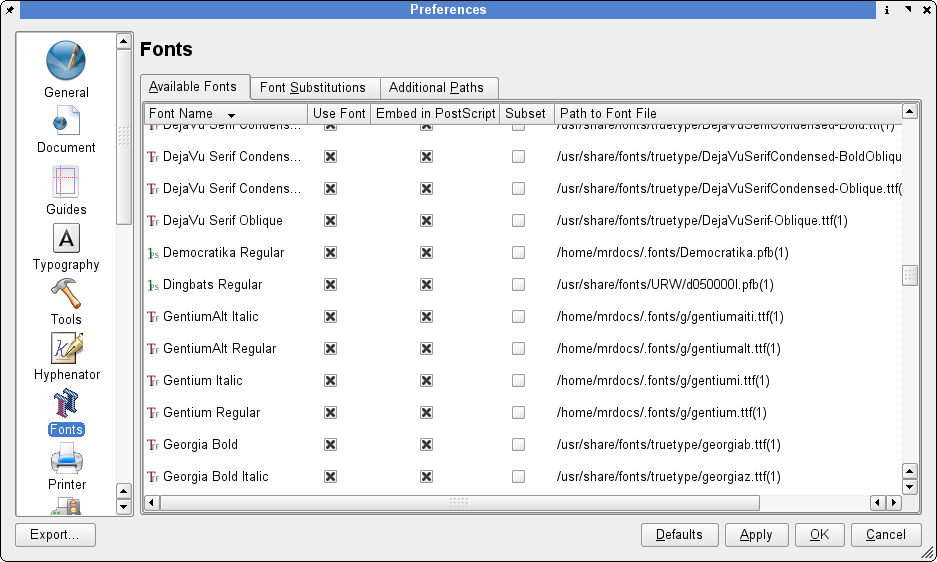
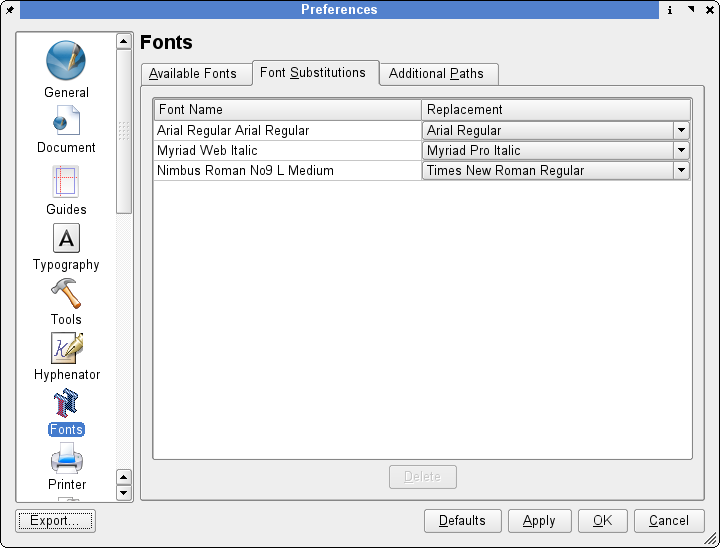
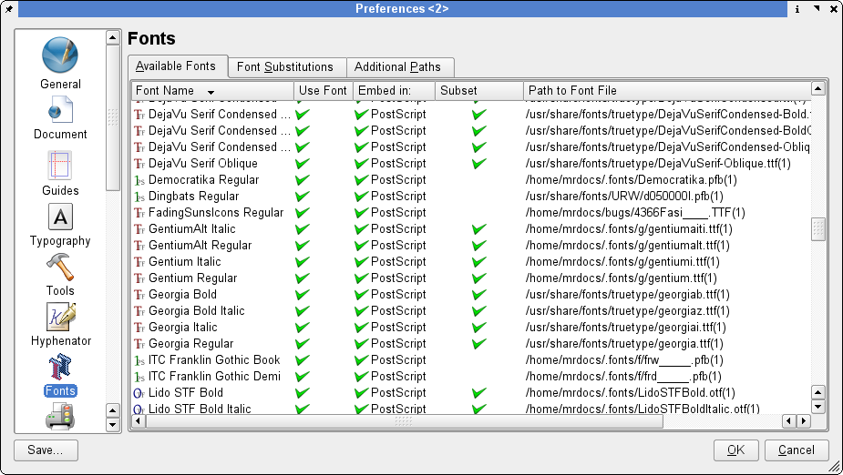

Scribus verfügt über einige sehr praktische Panel-Register, mit denen sich die zu benutzenden Schriftarten unkompliziert verwalten lassen. Außerdem können Sie die Global-Einstellungen für Schriftarten und Schriftarten-Ersetzungen, die für Scribus gelten sollen, leicht selbst vorgeben. Mit den neuen, eigenen Voreinstellungen können Sie:
Auf den ersten Blick mag es etwas verwirren, daß einige Optionen zunächst nicht anwählbar sind. Dahinter steht jedoch eine gewisse Logik, wie wir sehen werden. Seit je her besteht eine der Hürden der Schriftarten-Verwaltung mit Xfree86 darin, daß manche Anwendungen einfach ihr Schriftarten-Verzeichnis an den von Xfree86 erstellten Standardpfad anhängen. Das neuere Funktionsprinzip von fontconfig und Freetype2 haben das geändert und endlich eine Lösung für eines der ältesten Probleme gebracht, das der Endbenutzer mit Linux als Desktop-System bislang hatte.
Starten Sie Scribus, ohne ein Dokument zu öffnen. Dann klicken Sie auf Bearbeiten > Einstellungen > Schriftarten, und es erscheint ein Register-Panel. Wählen Sie die Registerkarte "Zusätzliche Pfade":
|  |
Hier können Sie Schriftarten-Pfade hinzufügen, die nicht zu den Standardpfaden von XFree86 oder X-org gehören. Im folgenden Beispiel sehen Sie drei benutzerdefinierte Pfade zu Schriftarten, die wir in Scribus benutzen wollen. Das Verzeichnis .fonts ist das Standardverzeichnis für das neue fontconfig, das zusammen mit Xft2 Bestandteil neuerer Distributionen ist. Klicken Sie auf OK, und Scribus fügt diese Schriftarten-Pfade hinzu, so daß alle korrekt installierten Schriften sogleich in neuen oder vorhandenen Dokumenten eingesetzt werden können.
Wenn Scribus ein neues Dokument öffnet, überprüft das Programm, ob alle im Dokument benutzten Schriftarten vorhanden sind. Ist das nicht der Fall, bekommen Sie gleich beim Öffnen des Dokuments die Möglichkeit, eine Ersetzung vorzunehmen. Außerdem können Sie diese Zuweisung auf der Registerkarte Font-Ersetzungen einstellen. Auf diese Weise können Sie das voreingestellte Ersetzungsprofil ändern. Im vorliegenden Beispiel ersetzen wir die Schriftart "Timmons Bold" (zu StarOffice 5.2 gehörig) durch eine TrueType-Version von "Times New Roman".
|  |
Diese Registerkarte listet die auf Ihrem System verfügbaren Schriftarten, gegebenenfalls mit benutzerdefinierten Pfadangaben. Hier können Sie auch einstellen, welche einzelne Schriftart jeweils von Scribus verwendet bzw. welche Schriftarten in PostScript-Dateien eingebettet werden sollen.
|  |
Im diesem Beispiel wurde die Schriftart Nimbus Roman (eine "Times Roman"-Nachbildung) deaktiviert, weil sie auf anderen Plattformen gelegentlich Anzeigeprobleme bereitet; zumal der Acrobat Reader ohnehin die eigenen Multi-Master-Fonts als Ersetzung benutzt.